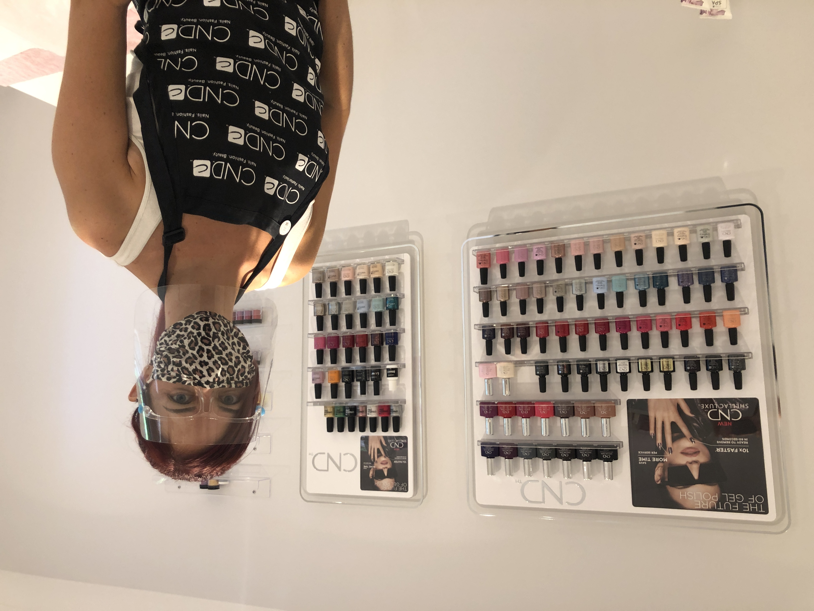

A relaxing space dedicated to nail health

I pride myself on making sure each and every client thoroughly enjoys their treatment, leaves feeling great, and is already looking forward to their next appointment.
I only work with industry-leading CND products and am proud to be further trained by CND ambassadors.
A great manicure or pedicure starts with great prep. Don't underestimate how important cuticle care is—from how fresh and healthy your nails look, to how well your polish goes on.
Using a cuticle remover, I push back and remove dead cuticles from the nail plates to ensure excellent adhesion of the polish and a tidy finish. I then cut, file, and shape the nails to suit your individual hands.